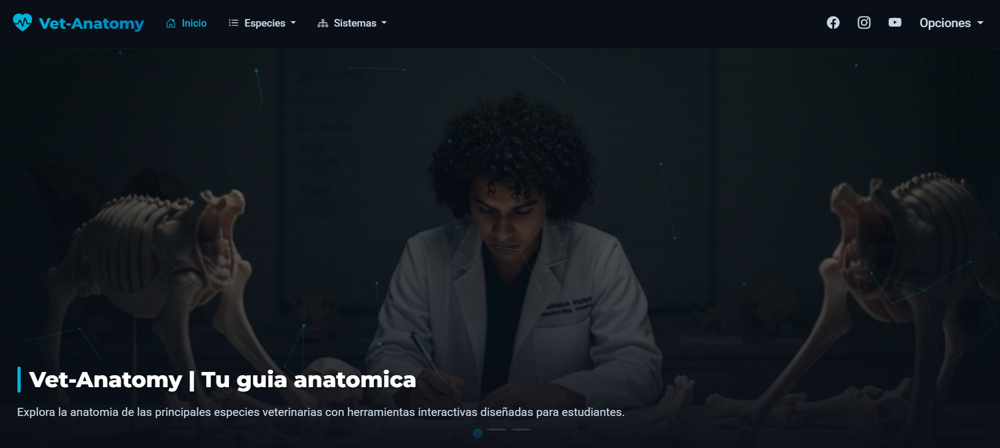
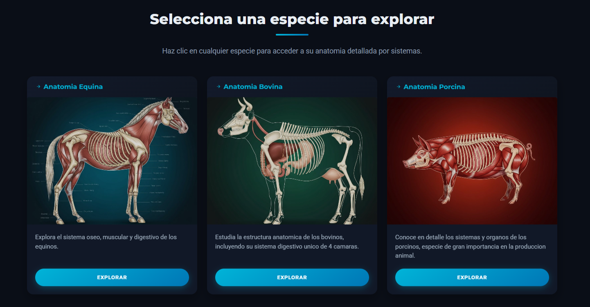
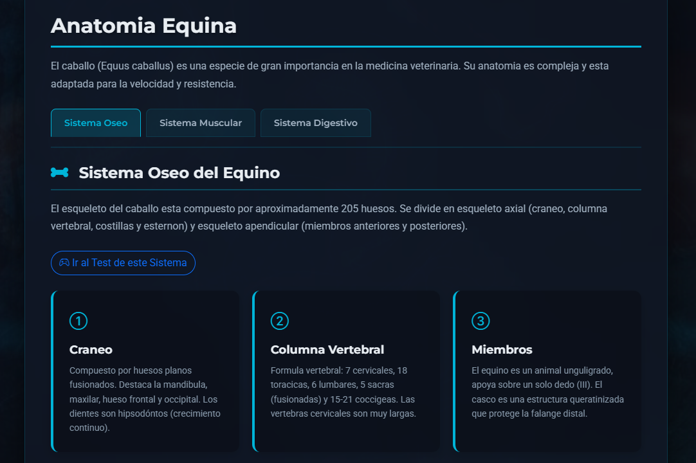
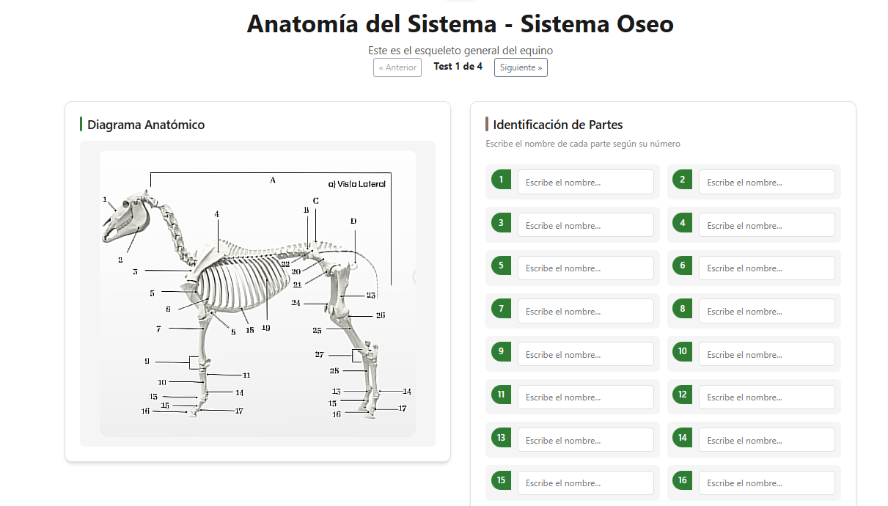
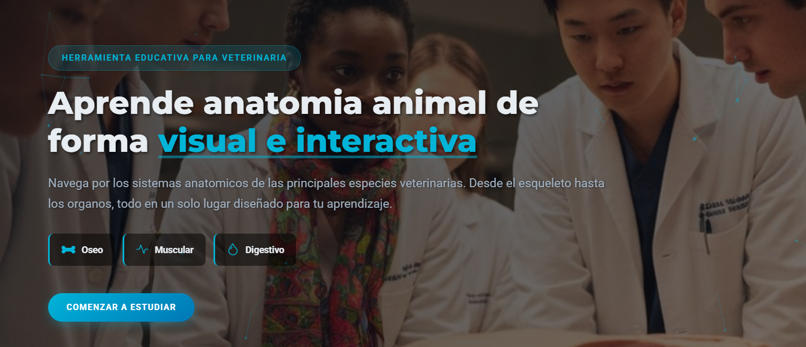

Plataforma interactiva para el estudio de anatomía animal

Vet Anatomy es una plataforma educativa diseñada específicamente para estudiantes de medicina veterinaria. Permite explorar y estudiar de forma interactiva los diferentes sistemas (muscular, óseo, digestivo) de diversas especies animales, como equinos, bovinos, porcinos, caninos y felinos. A través de tests dinámicos y representaciones visuales detalladas, la herramienta facilita la memorización y comprensión de la anatomía compleja de forma intuitiva.



